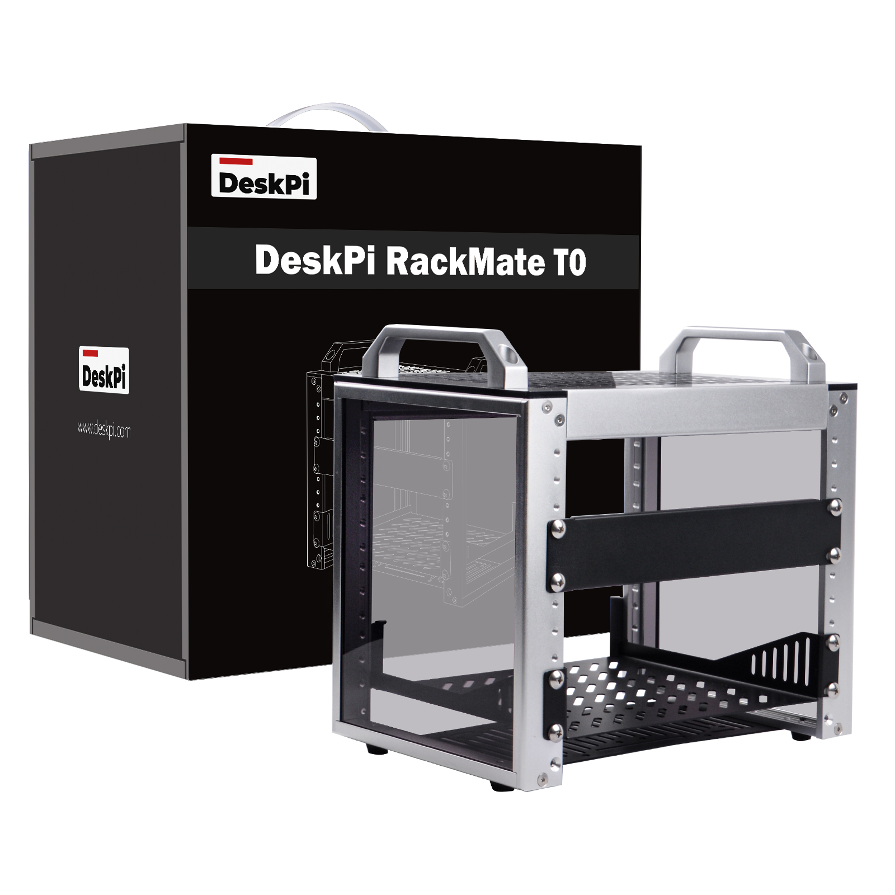

RackMate T0 4U Server Rack
The RackMate T0 is a robust and versatile 4U server rack designed to meet the demands of modern data center environments. With a depth of 10 inches, it offers ample space for a variety of server configurations.

Purchase URL
- Purchase: RackMate T0
Key Features
-
Sturdy Construction: Crafted from high-quality materials, the RackMate T0 ensures durability and reliability, providing a secure housing for your critical IT equipment.
-
Optimal Space Utilization: The 4U design allows for efficient use of vertical space, making it ideal for environments where rack space is at a premium.
-
Easy Access and Maintenance: The rack features tool-less mounting options and removable side panels, facilitating quick and easy access to servers for maintenance and upgrades.
-
Enhanced Cooling: Equipped with perforated side panels, the RackMate T0 promotes superior airflow, helping to keep your servers cool and operating at peak performance.
-
Secure and Stable: With a solid frame and reinforced corners, this server rack is designed to withstand the rigors of daily use, ensuring the stability of your IT infrastructure.
-
Versatile Compatibility: The RackMate T0 is compatible with a wide range of server and networking equipment, making it a flexible solution for diverse data center needs.
Specifications
- Width: 10 inches
- Depth: 200mm
- Height: 4U
- External Dimensions: 280x200x274mm
- Internal Dimensions: 222x200x241mm
- Easy to install: 4U Rack is shipped assembled, saving you the trouble of installation.
- Material: High-strength aluminum, steel and acrylic.
- Cooling: Perforated side panels for improved airflow
- Mounting: Tool-less mounting for quick server installation
- Package Contents: 4U Rack1 set, 1U tray1, 1U panel*1
- Weight: 3.12Kg
- Pacakge Dimensions: 32.5cm25cm31cm
The RackMate T0 is an excellent choice for organizations looking to optimize their server room space, improve cooling efficiency, and ensure the security and stability of their IT assets.
Gallery
- Product outlook

- Package Includes

- Dimensions
- Additional optional accessories
NOTE: Additional Optional accessories does not included in the package, additional purchase required. More information please visit: DeskPi Official WebStore
- Heavy-Duty and Optimized Design
- Application scenarios
Perfectly suited for creating a home lab or managing devices for a Home Assistant.